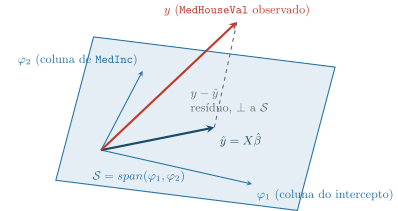

N = 16640
correlação(MedInc, MedHouseVal) = 0.672Regressão Linear e Máxima Verossimilhança
Aula 5 — Por Que Mínimos Quadrados É Máxima Verossimilhança Sob Ruído Gaussiano
Marcos M. Raimundo — Instituto de Computação, UNICAMP
2026-09-07
Abertura — Da Estrutura de Três Peças a um Alvo Contínuo
Da Revisão 1 para Hoje
A Revisão 1 revisou 4 aulas: sempre a mesma estrutura — distribuição \(\to\) verossimilhança \(\to\) decisão.
Mas nenhuma das quatro verossimilhanças foi sobre um alvo contínuo ligado linearmente aos atributos. Sempre densidade 1D, fatoração, ou proporção categórica.
Hoje: Regressão Linear — o modelo mais simples que existe geometricamente (ajustar uma reta). Mas por trás, a mesma estrutura de sempre — e desta vez vamos provar a conexão, não só apontá-la.
Roteiro — Quatro Perguntas
1. O que é “a melhor reta” geometricamente — e por que elevar o erro ao quadrado?
2. Como escrever isso em notação matricial, com solução fechada exata?
3. O que muda ao assumir uma história probabilística completa — ruído gaussiano — e construir sua verossimilhança?
4. Por que maximizar essa verossimilhança é minimizar soma de quadrados — o que isso revela para o resto do curso?
O Problema de Hoje
- California Housing: já usado na Aula 3 (
MedInc,HouseAgecomo atributos de árvore). - Hoje:
MedInc(renda mediana, US$10 mil) prevendoMedHouseVal(preço mediano, US$100 mil) — um alvo contínuo, não mais uma classe.
\(N=16\,640\) regiões. Qual é a melhor reta pela nuvem de pontos — e o que “melhor” quer dizer?
Pergunta
Se eu te desse duas retas diferentes, ambas passando “no meio” da nuvem de pontos, como você decidiria qual é “melhor” sem fazer nenhuma conta?
- □ Duas retas que passam pelo mesmo ponto médio \((\bar x,\bar y)\) da nuvem de dados são necessariamente igualmente boas, pois ambas capturam a tendência central dos dados.
- □ Se todos os pontos da nuvem estivessem exatamente sobre uma única reta (sem nenhum ruído), qualquer critério razoável de “melhor reta” — soma de quadrados, soma de valores absolutos, ou até maior desvio único — apontaria para essa mesma reta.
- □ Um termostato que tenta prever a temperatura de amanhã a partir da temperatura de hoje enfrenta exatamente o mesmo problema estrutural de “ajustar a melhor reta” que o preço de imóveis enfrenta aqui, ainda que o contexto seja completamente diferente — e por isso a inclinação ótima nesse problema seria necessariamente próxima de 1 (a temperatura de amanhã imita quase exatamente a de hoje), assim como aqui a inclinação relaciona renda a preço de forma direta.
- □ Se decidíssemos julgar “melhor reta” pela soma dos desvios (não ao quadrado, sem valor absoluto) entre pontos e reta, qualquer reta que passasse pela média dos dados \((\bar x,\bar y)\) teria soma de desvios exatamente zero — inclusive retas claramente ruins, giradas em ângulos absurdos.
Antes de Ajustar: O que “Melhor Reta” Já Pressupõe? — Resposta
Dica
- ✗ Mesmo ponto médio não implica mesma inclinação nem mesma qualidade de ajuste — duas retas girando em torno de \((\bar x,\bar y)\) com inclinações muito diferentes tratam os desvios de forma completamente distinta.
- ✔ Sem ruído, todos os critérios razoáveis concordam porque existe uma reta com erro zero em qualquer medida — a distinção entre critérios só importa quando há ruído genuíno.
- ✗ A estrutura do problema (ajustar a melhor reta a pares \((x,y)\)) é a mesma, mas nada garante que a inclinação ótima seja próxima de 1 — isso dependeria inteiramente de quão preditivo \(x\) é de \(y\) naquele domínio específico, não da forma do problema.
- ✔ Este é o ponto central: somar desvios sem elevar ao quadrado é degenerado — qualquer reta pela média tem soma de desvios zero, inclusive as absurdas. É exatamente por isso que “melhor reta” precisa de um critério mais informativo, como a soma de quadrados.
Voltando à pergunta: “melhor” não pode ser só “passa perto da média” — precisa penalizar desvios de um jeito que distinga retas boas de ruins. É isso que a soma de quadrados resolve, e é para lá que vamos agora.
Intuição — A Ideia Geométrica de Mínimos Quadrados
Resíduo: A Distância Entre Predição e Realidade
- Reta candidata: \(\hat y_i=\beta_0+\beta_1 x_i\). Resíduo: \(e_i=y_i-\hat y_i\).
- A pausa anterior já mostrou: somar \(e_i\) direto é degenerado (zero para qualquer reta pela média).
Solução clássica: minimizar \(\sum_i e_i^2\), não \(\sum_i e_i\).
Por quê o quadrado? (1) elimina o cancelamento — todo termo \(\ge 0\); (2) diferenciável (contrário do valor absoluto, que tem um “bico” em zero); (3) penaliza desvios grandes desproporcionalmente mais.

Bloco 1 — Formalização: RSS, Equações Normais e Projeção
Notação Matricial: RSS
- Matriz de projeto \(X\) (\(N\times(p{+}1)\)): cada linha um imóvel, 1ª coluna \(=1\) (intercepto), demais colunas atributos.
- \(\beta=(\beta_0,\ldots,\beta_p)^T\); predição para todos de uma vez: \(X\beta\).
\[ X = \begin{pmatrix} 1 & x_{11} & \cdots & x_{1p} \\ 1 & x_{21} & \cdots & x_{2p} \\ \vdots & \vdots & \ddots & \vdots \\ 1 & x_{N1} & \cdots & x_{Np} \end{pmatrix} \]
A coluna de \(1\)’s multiplica \(\beta_0\) em \(X\beta\) — o intercepto vira parte do mesmo produto matricial, sem precisar somá-lo à parte.
\[\text{RSS}(\beta) = \sum_{i=1}^N(y_i-f(x_i))^2 = \lVert y-X\beta\rVert^2\]
ESL, §3.2: “o método de estimação mais popular é mínimos quadrados, no qual escolhemos \(\beta\) para minimizar a soma residual de quadrados.”
Derivando as Equações Normais
\(\text{RSS}(\beta)\) é quadrática (convexa) em \(\beta\): \(\dfrac{\partial\text{RSS}}{\partial\beta}=-2X^T(y-X\beta)\).
Assumindo \(X\) com posto de coluna completo (\(X^TX\) positiva definida), igualamos a zero: \(X^T(y-X\beta)=0\).
Solução única: \(\hat\beta=(X^TX)^{-1}X^Ty\) — as equações normais (ESL, p. 45; PRML chega ao mesmo resultado via gradiente da log-verossimilhança, Bloco 3).
O Caso Geral: Hiperplanos
- \(p=1\) (hoje): \(X\beta\) é uma reta no plano \((x,y)\).
- \(p>1\): mesma equação \(\hat\beta=(X^TX)^{-1}X^Ty\), sem mudança — \(X\beta\) vira um hiperplano no espaço \((x,y)\) de \(p{+}1\) dimensões.
Ajuste com os \(8\) atributos do California Housing: \(R^2\approx0{,}584\) vs. \(R^2\approx0{,}451\) só com MedInc. Mais atributos, mais variação explicada — mesma equação.

A Geometria: Projeção Ortogonal
- Cada coluna de \(X\) é um vetor \(\varphi_j\in\mathbb R^N\) (\(N=16\,640\) imóveis, uma coordenada por imóvel).
- \(\hat y=X\hat\beta\) está sempre dentro de \(\mathcal S=\text{span}(\varphi_1,\varphi_2)\) — é uma combinação linear das colunas, por definição.
PRML: “a solução de mínimos quadrados para \(w\) corresponde à escolha de \(y\) que está no subespaço \(\mathcal S\) mais próxima de \(t\) […] a projeção ortogonal de \(t\) sobre \(\mathcal S\).”
ESL: “\(y\) é projetado ortogonalmente sobre o hiperplano gerado pelos vetores de entrada […] \(\hat y\) é a projeção ortogonal de \(y\) sobre esse subespaço.”
\(\lVert y-\hat y\rVert=\sqrt{\text{RSS}}\): a distância entre o ponto observado e o subespaço — minimizada exatamente pela equação normal.
O Ajuste, Sobre Dado Real
beta_hat (equações normais) = (0.4707, 0.4076)
RSS = 11710.64
R^2 = 0.451
- \(N=16\,640\): \(\hat\beta=(0{,}4707,\ 0{,}4076)\) — cada US$\(10\) mil de renda mediana \(\to{+}\)US$\(40{,}76\) mil de preço mediano.
- \(R^2\approx0{,}451\); correlação \(=0{,}672\) (moderada-forte, longe de \(1\) — nuvem larga em torno da reta).
Guardar: \(\hat\beta=(0{,}4707,0{,}4076)\) e \(\text{RSS}\approx11\,710{,}64\) — vão reaparecer intactos no Bloco 3, vindos de máxima verossimilhança.
Exercício: Geometria da Projeção Ortogonal
Geometricamente, por que o vetor de resíduos \(y-\hat y\) ser ortogonal ao subespaço gerado pelas colunas de \(X\) é exatamente a condição que caracteriza a MELHOR aproximação, e não uma coincidência do cálculo?
- □ Se, em vez de minimizar \(\lVert y-X\beta\rVert^2\), o critério fosse minimizar \(\lVert y-X\beta\rVert\) (a distância, sem elevar ao quadrado), o mesmo \(\hat\beta\) ainda resolveria o problema, porque minimizar uma distância e minimizar seu quadrado são operações que sempre produzem o mesmo ponto de mínimo (a raiz quadrada é crescente para distâncias não-negativas).
- □ Se as colunas de \(X\) fossem linearmente dependentes (por exemplo, uma coluna sendo o dobro exato da outra), \(X^TX\) deixaria de ser invertível, e a equação \(\hat\beta=(X^TX)^{-1}X^Ty\) deixaria de ter solução única — mas a projeção \(\hat y=X\hat\beta\) continuaria bem definida e única.
- □ Num algoritmo de recomendação que aproxima as avaliações de um usuário como combinação linear de “perfis latentes” pré-definidos, a mesma lógica de projeção ortogonal sobre o subespaço gerado pelos perfis ainda encontraria a melhor aproximação, no mesmo sentido de menor distância euclidiana — e essa melhor aproximação seria sempre única, mesmo que os perfis latentes fossem linearmente dependentes entre si.
- □ Como a equação normal \(X^T(y-X\hat\beta)=0\) garante que o resíduo é ortogonal a todas as colunas de \(X\), conclui-se que o resíduo \(y-X\hat\beta\) é necessariamente o vetor nulo sempre que \(X\) tiver pelo menos uma coluna.
Projeção, Resíduos e Equações Normais — Resposta
Dica
- ✔ Correto: como a raiz quadrada é estritamente crescente em distâncias não-negativas, o ponto que minimiza \(\lVert y-X\beta\rVert^2\) é o mesmo que minimiza \(\lVert y-X\beta\rVert\).
- ✔ Exatamente o caso não-full-rank do ESL (p. 46): \(X^TX\) singular quebra a unicidade de \(\hat\beta\), mas \(\hat y=X\hat\beta\) continua sendo a (única) projeção de \(y\) sobre \(\mathcal S\) — só há mais de uma forma de escrevê-la.
- ✗ A lógica de projeção continua valendo, mas a unicidade não: perfis latentes linearmente dependentes tornam \(X^TX\) singular, e nesse caso há infinitas combinações de coeficientes que atingem a mesma projeção — a mesma ressalva do item anterior.
- ✗ Ortogonalidade ao subespaço não implica resíduo nulo — só implica que o resíduo não tem nenhuma componente dentro de \(\mathcal S\). Se \(y\) não estiver em \(\mathcal S\) para começo de conversa (o caso típico com ruído real), o resíduo é não-nulo e ainda assim ortogonal a \(\mathcal S\).
Voltando à pergunta: não é coincidência — mover \(\hat y\) para qualquer outro ponto de \(\mathcal S\) só pode aumentar \(\lVert y-\hat y\rVert\) (Pitágoras: qualquer componente de deslocamento dentro de \(\mathcal S\) soma um termo positivo à distância). Ortogonalidade é a única forma de \(\hat y\) não deixar “sobra” evitável dentro do subespaço.
Demonstração: Por Que a Projeção É Ortogonal
- Equação normal (Bloco 1): \(X^Tr=0\), com \(r=y-X\hat\beta\).
- Linha a linha: \(\varphi_j^Tr=0\) para cada coluna \(j=1,\ldots,p{+}1\) — \(r\) ortogonal a cada coluna, individualmente.
Falta estender de “ortogonal às colunas” para “ortogonal a todo \(\mathcal S\)”. Qualquer \(v\in\mathcal S\): \(v=\sum_j c_j\varphi_j\).
\[r^Tv=\sum_j c_j\,(r^T\varphi_j)=\sum_j c_j\cdot0=0\]
Vale para qualquer \(c\) — \(r\) é ortogonal a todo vetor de \(\mathcal S\), não só às colunas. É isso, e não coincidência, que faz de \(\hat y\) a projeção ortogonal.
Bloco 2 — O Modelo de Ruído Gaussiano Homocedástico
Além da Álgebra: Que História Gera os Dados?
- Minimizar RSS não pressupõe nenhuma distribuição — funciona “não importa como os dados surjam” (ESL, p. 45).
- Pergunta de hoje: que história estatística tornaria mínimos quadrados a escolha certa, não só conveniente?
PRML: “assumimos que a variável-alvo \(t\) é dada por uma função determinística \(y(\mathbf x,\mathbf w)\) com ruído gaussiano aditivo […] \(p(t\mid\mathbf x,\mathbf w,\beta)=\mathcal N(t\mid y(\mathbf x,\mathbf w),\beta^{-1})\).”
Esse \(\beta\) do PRML é precisão (variância inversa), não os coeficientes. Daqui pra frente usamos \(\sigma^2\) no lugar dele — \(\beta\) fica reservado só para os coeficientes da reta.
As Quatro Premissas (Anunciadas Antes de Usar)
1. Linearidade condicional: \(\mathbb E[Y\mid X=x]=\beta^Tx\).
2. Ruído gaussiano aditivo: \(Y=\beta^TX+\epsilon\), \(\epsilon\sim\mathcal N(0,\sigma^2)\).
3. Homocedasticidade: \(\sigma^2\) constante, não muda com \(x\).
4. Independência entre observações.
Juntas: \(Y\mid X=x\sim\mathcal N(\beta^Tx,\sigma^2)\).
Construindo a Verossimilhança — Passo 1: o Produto
Independência \(\Rightarrow\) densidade conjunta \(=\) produto das individuais (PRML, p. 141): “obtemos […] \(p(\mathbf t\mid X,\mathbf w,\beta)=\prod_{n=1}^N\mathcal N(t_n\mid\mathbf w^T\boldsymbol\phi(\mathbf x_n),\beta^{-1})\).”
\[L(\beta,\sigma^2)=\prod_{i=1}^N \frac{1}{\sqrt{2\pi\sigma^2}}\exp\left\{-\frac{(y_i-\beta^Tx_i)^2}{2\sigma^2}\right\}\]
Construindo a Verossimilhança — Passo 2: o Logaritmo
Log é crescente \(\Rightarrow\) mesmo ponto de máximo, soma em vez de produto:
\[\ell(\beta,\sigma^2) = -\frac N2\ln(2\pi) - N\ln\sigma - \frac{1}{2\sigma^2}\underbrace{\sum_{i=1}^N(y_i-\beta^Tx_i)^2}_{=\ \text{RSS}(\beta),\ \text{Bloco 1}}\]
A mesma quantidade do Bloco 1, chegando por um caminho totalmente diferente — não é acidente. É o que provamos a seguir.
A Mesma Reta, Duas Leituras

- Bloco 1 (geométrica): a reta é “o ponto mais próximo” de \(y\) dentro de um subespaço.
- Bloco 2 (probabilística): a reta é a sequência de médias condicionais — para cada \(x\), \(y\) é gaussiano em torno de \(\hat\beta^Tx\).
As quatro “corcovas” têm a mesma largura (\(\hat\sigma=0{,}8389\) em toda parte) — isso é a homocedasticidade, desenhada.
Exercício: Variância do Ruído Dependente de \(x\)
Se a variância do ruído crescesse conforme a renda mediana aumenta — imóveis mais caros têm preços mais “espalhados” — o que exatamente, na construção da verossimilhança de hoje, deixaria de valer?
- □ Se \(\sigma^2\) dependesse de \(x_n\) (heterocedasticidade), a verossimilhança conjunta ainda seria o produto das densidades individuais (assumindo observações independentes), mas cada fator teria sua própria variância \(\sigma^2(x_n)\) em vez de uma variância comum — mudando a forma da log-verossimilhança final.
- □ No limite em que \(\sigma^2\to 0\), a densidade gaussiana \(\mathcal N(y_n\mid\beta^Tx_n,\sigma^2)\) se concentra inteiramente sobre o valor predito \(\beta^Tx_n\), e o modelo probabilístico se aproxima do caso determinístico \(y=\beta^Tx\) sem ruído algum.
- □ Num sensor de temperatura cujo erro de medição tem desvio-padrão constante independentemente da temperatura real medida, a suposição de homocedasticidade se aplicaria de forma genuína — e, uma vez verificada genuína para esse sensor, permaneceria válida para qualquer outro sensor do mesmo fabricante, sem necessidade de checagem individual.
- □ Como a verossimilhança de hoje assume que os erros são gaussianos, qualquer conjunto de dados cujos erros não sejam exatamente gaussianos torna a estimativa de mínimos quadrados \(\hat\beta\) inválida ou inutilizável.
Premissas do Ruído Gaussiano Homocedástico — Resposta
Dica
- ✔ Correto — a fatoração em produto (item 4, independência) continua de pé, mas cada fator carregaria seu próprio \(\sigma^2(x_n)\), e a log-verossimilhança teria um termo \(\ln\sigma(x_n)\) dentro do somatório em vez de um único \(N\ln\sigma\) fora dele.
- ✔ Correto — \(\sigma^2\to0\) colapsa a gaussiana num ponto de massa em \(\beta^Tx_n\), recuperando o caso determinístico como caso-limite do probabilístico.
- ✗ Verificar homocedasticidade num sensor não garante nada sobre outro sensor, nem do mesmo fabricante — variação de fabricação, calibração e uso exige checagem individual; a suposição nunca “generaliza de graça”.
- ✗ Falso: a estimativa de mínimos quadrados continua sendo uma escolha razoável mesmo sem normalidade exata (ela minimiza RSS por construção, independentemente da distribuição do ruído) — o que se perde sem normalidade é a interpretação como MLE e certas garantias de inferência exata, não a validade do ponto estimado em si.
Voltando à pergunta: o símbolo que ganharia um índice \(n\) é justamente \(\sigma^2\) — de \(\sigma^2\) (uma constante) para \(\sigma^2(x_n)\) (uma função de \(x\)). A fatoração em produto sobrevive; a forma de cada fator, não.
Bloco 3 — O Teorema Central: OLS É MLE Sob Normalidade
O Teorema: Maximizar \(\ell\) É Minimizar RSS
\[\ell(\beta,\sigma^2) = \underbrace{-\frac N2\ln(2\pi) - N\ln\sigma}_{\text{não depende de }\beta} - \frac{1}{2\sigma^2}\text{RSS}(\beta)\]
PRML: “a maximização da função de verossimilhança sob ruído gaussiano condicional é equivalente a minimizar uma função de erro de soma de quadrados.”
\(\frac{1}{2\sigma^2}>0\) constante \(\Rightarrow\) maximizar \(-c\cdot\text{RSS}(\beta)\) (\(c>0\)) \(\equiv\) minimizar \(\text{RSS}(\beta)\).
Logo, \[\hat\beta_{\text{MLE}} = \arg\max_\beta \ell(\beta,\sigma^2) = \arg\min_\beta \text{RSS}(\beta) = \hat\beta_{\text{OLS}}\]
Mesmo tipo de identidade já visto na Aula 3 (folha gaussiana: \(\ell_\tau\to\) minimizar \(Q_\tau\)) — aqui para o modelo linear completo. PRML chega à mesma equação normal via gradiente de \(\ell\), não de RSS.
Estimando \(\sigma^2\) — E Seu Viés
Derivando \(\ell\) em \(\sigma\) com \(\hat\beta\) fixo: \(-\dfrac N\sigma+\dfrac{\text{RSS}(\hat\beta)}{\sigma^3}=0 \ \Rightarrow\ \hat\sigma^2_{\text{MLE}}=\dfrac{\text{RSS}(\hat\beta)}{N}\).
def neg_log_verossimilhanca(params, x, y):
b0, b1, log_sigma = params
sigma = np.exp(log_sigma) # reparametriza p/ garantir sigma > 0
pred = b0 + b1 * x
n = len(y)
ll = (-n/2*np.log(2*np.pi) - n*np.log(sigma)
- np.sum((y - pred)**2) / (2*sigma**2))
return -ll
resultado = optimize.minimize(
neg_log_verossimilhanca, x0=[0.0, 0.0, 0.0], args=(x, y),
method="Nelder-Mead",
options={"xatol": 1e-10, "fatol": 1e-10, "maxiter": 40000, "maxfev": 40000},
)
b0_opt, b1_opt, log_sigma_opt = resultado.x
sigma_opt = np.exp(log_sigma_opt)
print(f"beta OLS (forma fechada) = ({beta_hat[0]:.8f}, {beta_hat[1]:.8f}), sigma = {sigma_mle:.8f}")
print(f"beta MLE (busca numérica) = ({b0_opt:.8f}, {b1_opt:.8f}), sigma = {sigma_opt:.8f}")
print(f"diferença máxima entre os dois caminhos: {max(abs(b0_opt-beta_hat[0]), abs(b1_opt-beta_hat[1]), abs(sigma_opt-sigma_mle)):.2e}")beta OLS (forma fechada) = (0.47068209, 0.40756945), sigma = 0.83890652
beta MLE (busca numérica) = (0.47068210, 0.40756945), sigma = 0.83890653
diferença máxima entre os dois caminhos: 1.80e-08Confirmação Numérica: Dois Caminhos, Um Ponto
scipy.optimize.minimize(Nelder-Mead, sem gradiente, sem fórmula fechada) parte de \(\beta_0=\beta_1=0,\sigma=1\).
Encontra \(\hat\beta=(0{,}47068210,\,0{,}40756945)\), \(\hat\sigma=0{,}83890653\) — idêntico à forma fechada até a \(8^a\) casa decimal.
Diferença \(\approx1{,}8\times10^{-8}\): ruído numérico do otimizador, não erro sistemático. A prova algébrica não precisava disso — mas a confirmação mostra que os dois caminhos (álgebra linear e busca cega) levam ao mesmo ponto.
A Superfície Tem Um Único Pico

Grade \(150\times150\) em \((\beta_0,\beta_1)\), \(\sigma\) fixo no MLE: um único pico, exatamente onde a forma fechada e a busca numérica já haviam apontado.
\(\ell\) é RSS com sinal trocado e escalado \(\Rightarrow\) superfície é uma parabolóide invertida — sem máximos locais escondidos. Propriedade que otimização mais geral (redes neurais) não tem.
Exercício: OLS = MLE — Coincidência ou Propriedade?
A busca numérica encontrou exatamente o mesmo \(\hat\beta\) que a fórmula fechada, a menos de \(10^{-8}\). Isso prova que maximizar a log-verossimilhança SEMPRE encontra o mínimo de RSS, para qualquer distribuição de ruído — ou é uma coincidência do caso gaussiano?
- □ Se o ruído fosse Laplace (dupla-exponencial) em vez de gaussiano, maximizar a verossimilhança correspondente levaria a minimizar a soma dos valores absolutos dos resíduos, não a soma de quadrados — porque é a forma funcional específica da densidade gaussiana (\(\propto\exp(-\cdot^2)\)) que produz o termo quadrático.
- □ No limite em que \(N\to\infty\) com o modelo verdadeiro sendo exatamente linear e gaussiano, \(\hat\beta_{\text{MLE}}\) e \(\hat\sigma^2_{\text{MLE}}\) convergem para os valores populacionais verdadeiros, incluindo o viés de \(\hat\sigma^2_{\text{MLE}}\) (que usa \(N\) no denominador em vez de \(N-p-1\)), que desaparece assintoticamente.
- □ Num problema de classificação binária ajustado por máxima verossimilhança sob um modelo Bernoulli (fora do escopo desta aula, mas o mesmo princípio), o objeto que se maximiza também terá, por construção do modelo, um termo cuja otimização coincide com minimizar alguma função de erro específica daquela distribuição, não necessariamente a soma de quadrados — e, por essa razão, comparar diretamente o valor numérico da log-verossimilhança máxima entre o modelo gaussiano desta aula e esse modelo Bernoulli diria qual dos dois descreve melhor seus respectivos dados.
- □ Como a otimização numérica confirmou que o ponto de máximo da log-verossimilhança coincide com \(\hat\beta_{\text{OLS}}\), conclui-se que qualquer método de otimização numérica (incluindo os que não convergem corretamente) chegaria ao mesmo resultado, tornando a forma fechada desnecessária na prática.
OLS = MLE: O Que a Prova Realmente Diz — Resposta
Dica
- ✔ Correto — a prova do Bloco 3 usou explicitamente a forma \(\exp\{-(\cdot)^2/2\sigma^2\}\) da gaussiana; trocar por Laplace (\(\propto\exp\{-|\cdot|/b\}\)) produz \(\sum|y_i-\beta^Tx_i|\) na log-verossimilhança, não uma soma de quadrados.
- ✔ Correto — consistência assintótica do MLE é uma propriedade geral, e \(N/(N-p-1)\to1\) conforme \(N\to\infty\), eliminando o viés relativo no limite.
- ✗ A primeira parte é verdadeira (Bernoulli levaria a outra função de erro, não soma de quadrados — de fato, entropia cruzada, Aula 7), mas comparar log-verossimilhanças máximas entre famílias distribucionais diferentes não é válido sem correção — as escalas e normalizações de gaussiana e Bernoulli não são diretamente comparáveis; precisaria de critérios como AIC/BIC, não o valor bruto.
- ✗ Confirmar numericamente para um dataset e um otimizador que convergiu corretamente não estende a garantia a qualquer otimizador — um método que não converge (parar cedo, ficar preso, divergir numericamente) não chegaria ao mesmo ponto; a forma fechada continua sendo o padrão de referência, exata e sem essas contingências.
Voltando à pergunta: é uma propriedade do caso gaussiano especificamente — a prova do Bloco 3 usou a forma exponencial-quadrática da densidade gaussiana em um passo específico (isolar o termo em \(\beta\)). Outra distribuição de ruído produziria outra função de erro a minimizar, pela mesma lógica geral, mas não a mesma soma de quadrados.
Síntese e Limitações
As Premissas Se Sustentam Nos Próprios Dados?
- Bloco 2 assumiu: linearidade, ruído gaussiano, homocedasticidade, independência.
Achado real 1 — censura: MedHouseVal truncado em \(5{,}00001\) — \(747/16\,640\) (\(4{,}49\%\)) no teto. Empurra \(\hat\beta_1\) para baixo do valor sem censura.
Achado real 2 — heterocedasticidade real: variância dos resíduos \(0{,}486\to0{,}653\to0{,}849\to0{,}825\) do 1º ao 4º quartil de renda — quase dobra.
Não torna o modelo inútil (\(\hat\beta_{\text{OLS}}\) segue não-viesado, Gauss-Markov), mas enfraquece a interpretação de “um único \(\hat\sigma\)” e a inferência exata (ICs, testes).
Ponte Para a Aula 7
A receita de hoje — distribuição \(\to\) verossimilhança \(\to\) erro revelado pela maximização — não é exclusiva da gaussiana.
Aula 7: troca Gaussiana por Bernoulli (alvo binário). Mesma receita \(\Rightarrow\) entropia cruzada no lugar de soma de quadrados — o erro por trás da Regressão Logística.
censura: 747/16640 = 0.0449
quartil 1: renda média=1.92, var(resíduo)=0.486
quartil 2: renda média=2.99, var(resíduo)=0.653
quartil 3: renda média=4.00, var(resíduo)=0.849
quartil 4: renda média=6.28, var(resíduo)=0.825
Fechamento
O que Aprendemos Hoje
- “Melhor reta” \(=\) minimizar \(\sum e_i^2\) — evita cancelamento, é diferenciável, penaliza desvios grandes mais que proporcionalmente.
- \(\text{RSS}(\beta)=\lVert y-X\beta\rVert^2\) minimizado por \(\hat\beta=(X^TX)^{-1}X^Ty\) — projeção ortogonal de \(y\) sobre o espaço-coluna de \(X\).
- \(Y\mid X\sim\mathcal N(\beta^Tx,\sigma^2)\) homocedástico \(\Rightarrow\) verossimilhança \(=\) produto de gaussianas, log-verossimilhança \(=\) soma.
- Único termo de \(\ell\) que depende de \(\beta\) é \(-\frac{1}{2\sigma^2}\text{RSS}(\beta)\) \(\Rightarrow\) maximizar \(\equiv\) minimizar RSS. Identidade algébrica, confirmada a \(10^{-8}\).
Próximas aulas: Aula 7 (Bernoulli \(\to\) entropia cruzada), Aula 8 (penalidade \(=\) priori, MAP), Aula 9 (decomposição viés-variância).
UNICAMP — Instituto de Computação